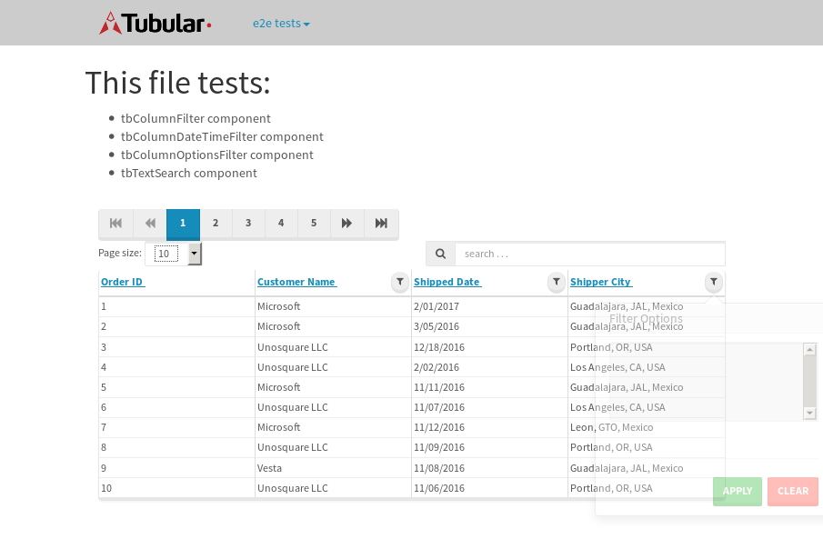

tbColumn.Grid Sorting - 175.904sTests: 5Skipped: 0Failures: 3 should sort data in ascending order then on descending order when sorting by Order Id column - 44.165sExpected '1' to be '500'.✗Expected '20' to be '481'.✗Tests passed: 50.00%should order data in ascending order when click-sorting an unsorted text column - 22.966sTests passed: 100.00%should order data in descending order when click-sorting an ascending-sorted text column - 42.887sExpected 'Advanced Technology Systems' to be 'Vesta'.✗Tests passed: 0.00%should order data in ascending order when click-sorting an unsorted date column - 22.977sTests passed: 100.00%should order data in descending order when click-sorting twice an unsorted date column - 42.901sExpected '12/30/2015' to match /1\/01\/2016/.✗Tests passed: 0.00%
tbEmptyForm - 18.732sTests: 3Skipped: 0Failures: 0 should have an empty required field - 17.152sTests passed: 100.00%should not be able to click on save - 0.033sTests passed: 100.00%should load default value for numeric field - 0.035sTests passed: 100.00%
Tubular Filters.tbColumnFilter - 114.368sTests: 12Skipped: 0Failures: 0 should cancel filtering when clicking outside filter-popover - 17.45sTests passed: 100.00%should disable Value text-input for "None" filter - 5.419sTests passed: 100.00%should disable apply button for "None" filter - 5.524sTests passed: 100.00%should decorate popover button when showing data is being filtered for its column - 10.739sTests passed: 100.00%should correctly filter data for the "Equals" filtering option - 6.13sTests passed: 100.00%should correctly filter data for the "Not Equals" filtering option - 6.574sTests passed: 100.00%should correctly filter data for the "Contains" filtering option - 6.629sTests passed: 100.00%should correctly filter data for the "Not Contains" filtering option - 6.391sTests passed: 100.00%should correctly filter data for the "Starts With" filtering option - 5.685sTests passed: 100.00%should correctly filter data for the "Not Starts With" filtering option - 5.933sTests passed: 100.00%should correctly filter data for the "Ends With" filtering option - 6.061sTests passed: 100.00%should correctly filter data for the "Not Ends With" filtering option - 6.199sTests passed: 100.00%
Tubular Filters.tbColumnDateTimeFilter - 130.303sTests: 12Skipped: 0Failures: 0 should cancel filtering when clicking outside filter-popover - 7.59sTests passed: 100.00%should disable Value text-input for "None" filter - 5.535sTests passed: 100.00%should disable apply button for "None" filter - 5.779sTests passed: 100.00%should clear filtering when clicking on Clean button - 17.676sTests passed: 100.00%should decorate popover button when showing data is being filtered for its column - 11.298sTests passed: 100.00%should correctly filter data for the "Equals" filtering option - 6.433sTests passed: 100.00%should correctly filter data for the "Not Equals" filtering option - 7.288sTests passed: 100.00%should correctly filter data for the "Between" filtering option - 11.875sTests passed: 100.00%should correctly filter data for the "Greater-or-equal" filtering option - 12.286sTests passed: 100.00%should correctly filter data for the "Greater" filtering option - 11.866sTests passed: 100.00%should correctly filter data for the "Less-or-equal" filtering option - 10.8sTests passed: 100.00%should correctly filter data for the "Less" filtering option - 10.737sTests passed: 100.00%
Tubular Filters.tbColumnOptionsFilter - 27.884sTests: 3Skipped: 0Failures: 2 should cancel filtering when clicking outside filter-popover - 5.59sFailed: Index out of bound. Trying to access element at index: 0, but there are only 0 elements that match locator By(css selector, option)✗Tests passed: 0.00%should decorate popover button when showing data is being filtered for its column - 5.726sFailed: Index out of bound. Trying to access element at index: 0, but there are only 0 elements that match locator By(css selector, option)✗Tests passed: 50.00%should filter column-elements in accordance to the selected filter when selecting a single option - 5.617sTests passed: 100.00%
Tubular Filters.tbTextSearch - 48.943sTests: 5Skipped: 0Failures: 0 min-chars is not set - 0.094sTests passed: 100.00%should filter data in searchable-column customer name to matching inputted text, starting from 3 characters - 8.19sTests passed: 100.00%should filter data in searchable-column shipper city to matching inputted text, starting from 3 characters - 13.607sTests passed: 100.00%should show clear button when there is inputted text only - 5.615sTests passed: 100.00%should clear filtering when clicking clear button - 15.471sTests passed: 100.00%
tbForm related components.tbCheckboxField - 9.789sTests: 2Skipped: 0Failures: 0 should save changes on "SAVE" - 4.118sTests passed: 100.00%should discard changes on "CANCEL" - 3.02sTests passed: 100.00%
tbForm related components.tbDropDownEditor - 12.21sTests: 5Skipped: 0Failures: 0 should set initial input value to the value of "value" attribute when defined - 1.412sTests passed: 100.00%should show the component name value in a label field when "showLabel" attribute is true - 1.435sTests passed: 100.00%should show a help field equal to this attribute, is present - 1.417sTests passed: 100.00%should submit modifications to item/server when clicking form "Save" - 4.597sTests passed: 100.00%should NOT submit modifications to item/server when clicking form "Cancel" - 2.088sTests passed: 100.00%
tbForm related components.tbTextArea - 15.544sTests: 7Skipped: 0Failures: 0 should set initial input value to the value of "value" attribute when defined - 1.37sTests passed: 100.00%should be invalidated when the number of chars is not in the range of "min" and "max" attributes - 2.172sTests passed: 100.00%should show the component name value in a label field when "showLabel" attribute is true - 1.287sTests passed: 100.00%should show a help field equal to this attribute, is present - 1.293sTests passed: 100.00%should require the field when the attribute "required" is true - 1.571sTests passed: 100.00%should submit modifications to item/server when clicking form "Save" - 4.459sTests passed: 100.00%should NOT submit modifications to item/server when clicking form "Cancel" - 2.131sTests passed: 100.00%
tbForm related components.tbDateEditor - 14.237sTests: 6Skipped: 0Failures: 0 should set initial date value to the value of "value" attribute when defined - 1.499sTests passed: 100.00%should be invalidated when the date is not in the range of "min" and "max" attributes - 2.08sTests passed: 100.00%should show the component name value in a label field when "showLabel" attribute is true - 1.342sTests passed: 100.00%should show a help field equal to this attribute, is present - 1.296sTests passed: 100.00%should submit modifications to item/server when clicking form "Save" - 3.236sTests passed: 100.00%should NOT submit modifications to item/server when clicking form "Cancel" - 3.249sTests passed: 100.00%
tbForm related components.tbTypeaheadEditor - 19.157sTests: 7Skipped: 0Failures: 0 should show an options list when there is an API-info/component entered-data - 2.428sTests passed: 100.00%should select the option clicked - 2.121sTests passed: 100.00%should show a "delete" button when an option/match is selected, and delete the option if button is clicked - 2.345sTests passed: 100.00%should show a label value equal to the component name when "showLabel" attribute is true - 1.875sTests passed: 100.00%should require a value when "require" attribute is true - 2.237sTests passed: 100.00%should submit modifications to item/server when clicking form "Save" - 4.049sTests passed: 100.00%should NOT submit modifications to item/server when clicking form "Cancel" - 2.494sTests passed: 100.00%
tbForm related components.tbSimpleEditor - 21.287sTests: 9Skipped: 0Failures: 0 should set initial input value to the value of "value" attribute when defined - 1.373sTests passed: 100.00%should be invalidated when the number of chars is not in the range of "min" and "max" attributes - 2.081sTests passed: 100.00%should show the component name value in a label field when "showLabel" attribute is true - 1.513sTests passed: 100.00%should set input placeholder to the value of "placeholder" attribute - 2.352sTests passed: 100.00%should validate the control using the "regex" attribute, if present - 1.626sTests passed: 100.00%should show a help field equal to this attribute, is present - 1.453sTests passed: 100.00%should require the field when the attribute "required" is true - 1.773sTests passed: 100.00%should submit modifications to item/server when clicking form "Save" - 5.243sTests passed: 100.00%should NOT submit modifications to item/server when clicking form "Cancel" - 2.537sTests passed: 100.00%
tbForm related components.tbNumericEditor - 17.639sTests: 7Skipped: 0Failures: 0 should set initial component value to the value of "value" attribute when defined - 1.731sTests passed: 100.00%should be invalidated when the entered number is not in the range of "min" and "max" attributes - 2.271sTests passed: 100.00%should show the component name value in a label field when "showLabel" attribute is true - 1.552sTests passed: 100.00%should show a help field equal to this attribute, is present - 1.486sTests passed: 100.00%should require the field when the attribute "required" is true - 1.856sTests passed: 100.00%should submit modifications to item/server when clicking form "Save" - 5.037sTests passed: 100.00%should NOT submit modifications to item/server when clicking form "Cancel" - 2.352sTests passed: 100.00%
tbForm Connection Error NoModelKey - 3.079sTests: 1Skipped: 0Failures: 0 tbForm connection error functionality - 0.005sTests passed: 100.00%
tbForm Connection Error NoServerUrl - 1.807sTests: 1Skipped: 0Failures: 0 tbForm connection error functionality - 0.001sTests passed: 100.00%
tbGridComponents - 29.879sTests: 6Skipped: 0Failures: 1 should add item with newRow method - 3.975sTests passed: 100.00%should add item with newRow method and cancel action - 0.359sTests passed: 100.00%should update item with tbSaveButton - 2.043sTests passed: 100.00%should NOT update item on cancel Update action - 0.863sTests passed: 100.00%should remove item with tbRemoveButton - 20.618sExpected 23 not to be 23, 'should remove the row from the table'.✗Tests passed: 50.00%should NOT remove item on cancel Remove action - 0.663sTests passed: 100.00%
tbGridPager.navigation buttons - 2.327sTests: 1Skipped: 0Failures: 0 should perform no action when clicking on the numbered navigation button corresponding to the current-showing results page - 0.587sTests passed: 100.00%
tbGridPager.navigation buttons.first/non-last results page related functionality - 0.671sTests: 2Skipped: 0Failures: 0 should disable "first" and "previous" navigation buttons when in first results page - 0.109sTests passed: 100.00%should enable "last" and "next" navigation buttons when in a results page other than last - 0.562sTests passed: 100.00%
tbGridPager.navigation buttons.last/non-first results page related functionality - 1.069sTests: 2Skipped: 0Failures: 0 should disable "last" and "next" navigation buttons when in last results page - 0.538sTests passed: 100.00%should enable "first" and "previous" navigation buttons when in a results page other than first - 0.531sTests passed: 100.00%
tbGridPager.page navigation - 3.522sTests: 5Skipped: 0Failures: 0 should go to next results page when clicking on next navigation button - 1.005sTests passed: 100.00%should go to previous results page when clicking on previous navigation button - 0.943sTests passed: 100.00%should go to last results page when clicking on last navigation button - 0.535sTests passed: 100.00%should go to first results page when clicking on first navigation button - 0.531sTests passed: 100.00%should go to corresponding results page when clicking on a numbered navigation button - 0.508sTests passed: 100.00%
tbGridPagerInfo - 4.159sTests: 2Skipped: 0Failures: 0 should show text in accordance to numbered of filter rows and current results-page - 1.739sTests passed: 100.00%should show count in footer - 0.023sTests passed: 100.00%
tbPageSizeSelctor - 11.298sTests: 4Skipped: 0Failures: 0 should filter up to 10 data rows per page when selecting a page size of "10" - 2.393sTests passed: 100.00%should filter up to 20 data rows per page when selecting a page size of "20" - 2.349sTests passed: 100.00%should filter up to 50 data rows per page when selecting a page size of "50" - 2.484sTests passed: 100.00%should filter up to 100 data rows per page when selecting a page size of "100" - 2.64sTests passed: 100.00%
tbSingleForm - 12.558sTests: 8Skipped: 1Failures: 1 should load correct info - 0s***Skipped***Tests passed: 0%should change customer name - 1.709sTests passed: 100.00%should save it - 1.93sExpected '' to be 'Saved'.✗Tests passed: 50.00%should clear the inputs - 1.768sTests passed: 100.00%should update - 2.052sTests passed: 100.00%should reset editor - 1.763sTests passed: 100.00%should not save if not Changes - 1.668sTests passed: 100.00%should not be able to click on save - 1.667sTests passed: 100.00%


{kind=link}